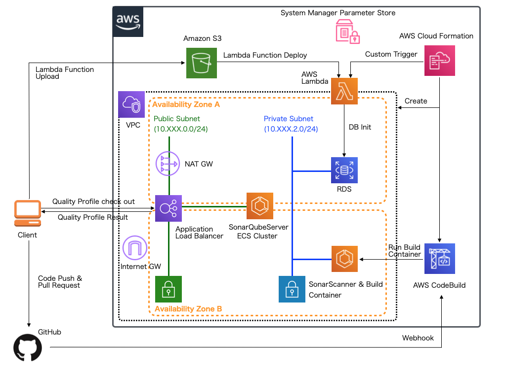
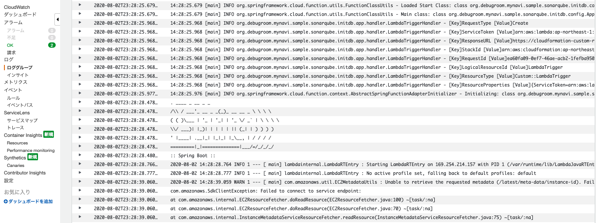

<!DOCTYPE html>

<html xmlns="http://www.w3.org/1999/xhtml" lang="ja">
  <head>
    <meta http-equiv="X-UA-Compatible" content="IE=Edge" />
    <meta http-equiv="Content-Type" content="text/html; charset=utf-8" />
    <title>【第42回】AWS CloudFormationを用いた基盤自動化(22)継続的インテグレーション環境の構築(3) &#8212; mynavi-doc-draft 1.0.0.SNAPSHOT ドキュメント</title>
    <link rel="stylesheet" href="../_static/bootstrap-sphinx.css" type="text/css" />
    <link rel="stylesheet" href="../_static/pygments.css" type="text/css" />
    <script type="text/javascript" id="documentation_options" data-url_root="../" src="../_static/documentation_options.js"></script>
    <script type="text/javascript" src="../_static/jquery.js"></script>
    <script type="text/javascript" src="../_static/underscore.js"></script>
    <script type="text/javascript" src="../_static/doctools.js"></script>
    <script type="text/javascript" src="../_static/translations.js"></script>
    <script type="text/javascript" src="../_static/js/jquery-1.11.0.min.js"></script>
    <script type="text/javascript" src="../_static/js/jquery-fix.js"></script>
    <script type="text/javascript" src="../_static/bootstrap-3.3.7/js/bootstrap.min.js"></script>
    <script type="text/javascript" src="../_static/bootstrap-sphinx.js"></script>
    <link rel="index" title="索引" href="../genindex.html" />
    <link rel="search" title="検索" href="../search.html" />
    <link rel="next" title="【第43回】AWS CloudFormationを用いた基盤自動化(23)継続的インテグレーション環境の構築(4)" href="automation_infra_devops_cloudformation_sonarqube_server.html" />
    <link rel="prev" title="【第41回】AWS CloudFormationを用いた基盤自動化(21)継続的インテグレーション環境の構築(2)" href="automation_infra_devops_cloudformation_sonarqube_lambda.html" />
<meta charset='utf-8'>
<meta http-equiv='X-UA-Compatible' content='IE=edge,chrome=1'>
<meta name='viewport' content='width=device-width, initial-scale=1.0, maximum-scale=1'>
<meta name="apple-mobile-web-app-capable" content="yes">

  </head><body>

  <div id="navbar" class="navbar navbar-default navbar-fixed-top">
    <div class="container">
      <div class="navbar-header">
        <!-- .btn-navbar is used as the toggle for collapsed navbar content -->
        <button type="button" class="navbar-toggle" data-toggle="collapse" data-target=".nav-collapse">
          <span class="icon-bar"></span>
          <span class="icon-bar"></span>
          <span class="icon-bar"></span>
        </button>
        <a class="navbar-brand" href="../index.html">
          mynavi-doc-draft</a>
        <span class="navbar-text navbar-version pull-left"><b></b></span>
      </div>

        <div class="collapse navbar-collapse nav-collapse">
          <ul class="nav navbar-nav">
            
            
              <li class="dropdown globaltoc-container">
  <a role="button"
     id="dLabelGlobalToc"
     data-toggle="dropdown"
     data-target="#"
     href="../index.html">Site <b class="caret"></b></a>
  <ul class="dropdown-menu globaltoc"
      role="menu"
      aria-labelledby="dLabelGlobalToc"><p class="caption"><span class="caption-text">Contents:</span></p>
<ul>
<li class="toctree-l1"><a class="reference internal" href="../cloud_native/aws-lambda-and-api-gateway-1.html">【第1回】サーバレス開発(1)Spring Cloud Functionの実装</a></li>
<li class="toctree-l1"><a class="reference internal" href="../cloud_native/aws-lambda-and-api-gateway-2.html">【第2回】サーバレス開発(2)Amazon Lambdaの利用</a></li>
<li class="toctree-l1"><a class="reference internal" href="../cloud_native/aws-lambda-and-api-gateway-3.html">【第3回】サーバレス開発(3)AWS API Gatewayの利用</a></li>
<li class="toctree-l1"><a class="reference internal" href="../cloud_native/aws-ecs-1.html">【第4回】ECSコンテナAP開発(1)VPC構築</a></li>
<li class="toctree-l1"><a class="reference internal" href="../cloud_native/aws-ecs-2.html">【第5回】ECSコンテナAP開発(2)ALB構築</a></li>
<li class="toctree-l1"><a class="reference internal" href="../cloud_native/aws-ecs-3.html">【第6回】ECSコンテナAP開発(3)SpringBootアプリケーション実装</a></li>
<li class="toctree-l1"><a class="reference internal" href="../cloud_native/aws-ecs-4.html">【第7回】ECSコンテナAP開発(4)Dockerイメージ作成</a></li>
<li class="toctree-l1"><a class="reference internal" href="../cloud_native/aws-ecs-5.html">【第8回】ECSコンテナAP開発(5)ECSクラスタ設定</a></li>
<li class="toctree-l1"><a class="reference internal" href="../cloud_native/aws-ecs-6.html">【第9回】ECSコンテナAP開発(6)ECSタスク設定</a></li>
<li class="toctree-l1"><a class="reference internal" href="../cloud_native/aws-ecs-7.html">【第10回】ECSコンテナAP開発(7)ECSサービス設定</a></li>
<li class="toctree-l1"><a class="reference internal" href="../cloud_native/aws-rds-1.html">【第11回】Amazon RDSの概要とデータベース構築</a></li>
<li class="toctree-l1"><a class="reference internal" href="../cloud_native/aws-rds-2.html">【第12回】RDSへのテーブル構築とSpring Data JPAおよびSpring Cloud AWSを用いたRDSアクセスアプリケーションの実装(1)</a></li>
<li class="toctree-l1"><a class="reference internal" href="../cloud_native/aws-rds-3.html">【第13回】RDSへのテーブル構築とSpring Data JPAおよびSpring Cloud AWSを用いたRDSアクセスアプリケーションの実装(2)</a></li>
<li class="toctree-l1"><a class="reference internal" href="../cloud_native/aws-nosql-1-1.html">【第14回】NoSQL(1)-基礎-CAP定理を元にしたデータベースの分類とデータ特性</a></li>
<li class="toctree-l1"><a class="reference internal" href="../cloud_native/aws-nosql-1-2.html">【第15回】NoSQL(2)-基礎-AP型データベースAmazon DynamoDBとApache Cassandraの特徴</a></li>
<li class="toctree-l1"><a class="reference internal" href="../cloud_native/aws-nosql-2-1.html">【第16回】NoSQL(3)-DynamoDB-Amazon DynamoDBの概要及び構築と認証情報の設定</a></li>
<li class="toctree-l1"><a class="reference internal" href="../cloud_native/aws-nosql-2-2.html">【第17回】NoSQL(4)-DynamoDB-Spring Data DynamoDBを用いたアプリケーション(1)</a></li>
<li class="toctree-l1"><a class="reference internal" href="../cloud_native/aws-nosql-2-3.html">【第18回】NoSQL(5)-DynamoDB-Spring Data DynamoDBを用いたアプリケーション(2)</a></li>
<li class="toctree-l1"><a class="reference internal" href="../cloud_native/aws-nosql-3-1.html">【第N回】NoSQL-Managed Apache Cassandra</a></li>
<li class="toctree-l1"><a class="reference internal" href="../cloud_native/aws-nosql-3-2.html">【第N回】NoSQL-Spring Data Cassandraを用いたアプリケーション(1)</a></li>
<li class="toctree-l1"><a class="reference internal" href="../cloud_native/aws-nosql-3-3.html">【第N回】NoSQL-Spring Data Cassandraを用いたアプリケーション(2)</a></li>
<li class="toctree-l1"><a class="reference internal" href="../cloud_native/aws-nosql-4-1.html">【第19回】NoSQL(6)-AmazonElasiCacheの概要及びローカル環境でのRedisServer構築</a></li>
<li class="toctree-l1"><a class="reference internal" href="../cloud_native/aws-nosql-4-2.html">【第20回】NoSQL(10)-Spring SessionとSpring Data Redisを用いたアプリケーション(1)</a></li>
<li class="toctree-l1"><a class="reference internal" href="../cloud_native/aws-nosql-4-3.html">【第21回】NoSQL(11)-Spring SessionとSpring Data Redisを用いたアプリケーション(2)</a></li>
<li class="toctree-l1"><a class="reference internal" href="../cloud_native/aws-nosql-4-4.html">【第22回】NoSQL(12)-Amazon ElastiCacheの設定</a></li>
<li class="toctree-l1"><a class="reference internal" href="../cloud_native/aws-nosql-4-5.html">【第23回】NoSQL(13)-セッション共有するECSアプリケーションの構築(1)</a></li>
<li class="toctree-l1"><a class="reference internal" href="../cloud_native/aws-nosql-4-6.html">【第24回】NoSQL(14)-セッション共有するECSアプリケーションの構築(2)</a></li>
<li class="toctree-l1"><a class="reference internal" href="../cloud_native/aws-s3-1.html">【第25回】AmazonS3へSpringCloudAWSを使ってアクセスするアプリケーション実装(1)</a></li>
<li class="toctree-l1"><a class="reference internal" href="../cloud_native/aws-s3-2.html">【第26回】AmazonS3へSpringCloudAWSを使ってアクセスするアプリケーション実装(2)</a></li>
<li class="toctree-l1"><a class="reference internal" href="../cloud_native/aws-s3-3.html">【第27回】AmazonS3へSpringCloudAWSを使ってアクセスするアプリケーション実装(3)</a></li>
<li class="toctree-l1"><a class="reference internal" href="../cloud_native/aws-sqs-1.html">【第28回】AmazonSQSを使用する実装(1)</a></li>
<li class="toctree-l1"><a class="reference internal" href="../cloud_native/aws-sqs-2.html">【第29回】AmazonSQSを使用する実装(2)</a></li>
<li class="toctree-l1"><a class="reference internal" href="../cloud_native/aws-sqs-3.html">【第30回】AmazonSQSを使用する実装(3)</a></li>
<li class="toctree-l1"><a class="reference internal" href="../cloud_native/aws-sqs-4.html">【第31回】AmazonSQSを使用する実装(4)</a></li>
<li class="toctree-l1"><a class="reference internal" href="../cloud_native/aws-sqs-5.html">【第32回】AmazonSQSを使用する実装(5)</a></li>
</ul>
<p class="caption"><span class="caption-text">Contents:</span></p>
<ul>
<li class="toctree-l1"><a class="reference internal" href="../cloud_native/aws-s3-4.html">【第1回】AmazonS3へダイレクトアクセスするアプリケーション実装(4)</a></li>
<li class="toctree-l1"><a class="reference internal" href="../cloud_native/aws-s3-5.html">【第2回】AmazonS3へダイレクトアクセスするアプリケーション実装(5)</a></li>
<li class="toctree-l1"><a class="reference internal" href="../cloud_native/aws-s3-6.html">【第3回】AmazonS3へダイレクトアクセスするアプリケーション実装(6)</a></li>
<li class="toctree-l1"><a class="reference internal" href="../cloud_native/aws-s3-and-lambda-1.html">【第4回】AmazonS3で発生したイベント契機で実行するサーバレスアプリケーション(1)</a></li>
<li class="toctree-l1"><a class="reference internal" href="../cloud_native/aws-s3-and-lambda-2.html">【第5回】AmazonS3で発生したイベント契機で実行するサーバレスアプリケーション(2)</a></li>
</ul>
<p class="caption"><span class="caption-text">Contents:</span></p>
<ul class="current">
<li class="toctree-l1"><a class="reference internal" href="automation_infra_devops_overview.html">ソフトウェア開発自動化</a></li>
<li class="toctree-l1"><a class="reference internal" href="automation_infra_devops_actual_experience.html">【第1回】マイクロサービスアーキテクチャの基盤・デプロイ自動化</a></li>
<li class="toctree-l1"><a class="reference internal" href="automation_infra_devops_sonarqube.html">【第2回】SonarQubeを利用した静的解析環境の構築</a></li>
<li class="toctree-l1"><a class="reference internal" href="automation_infra_devops_sonarlint.html">【第3回】SonarLintを利用した開発端末の設定</a></li>
<li class="toctree-l1"><a class="reference internal" href="automation_infra_devops_micro_service_architecture.html">【第4回】マイクロサービスにおけるテスト自動化とテスト戦略</a></li>
<li class="toctree-l1"><a class="reference internal" href="automation_infra_devops_micro_service_unittest-1.html">【第5回】マイクロサービスの単体試験コード実装(前編)</a></li>
<li class="toctree-l1"><a class="reference internal" href="automation_infra_devops_micro_service_unittest-2.html">【第6回】マイクロサービスの単体試験コード実装(後編)</a></li>
<li class="toctree-l1"><a class="reference internal" href="automation_infra_devops_micro_service_integrationtest.html">【第7回】マイクロサービスの結合試験コード実装</a></li>
<li class="toctree-l1"><a class="reference internal" href="automation_infra_devops_web_app_unittest.html">【第8回】マイクロサービスを呼び出すWebAPの単体テストコード・E2Eテストの実装(前編)</a></li>
<li class="toctree-l1"><a class="reference internal" href="automation_infra_devops_web_app_unit_e2e_test.html">【第9回】マイクロサービスを呼び出すWebAPの単体テストコード・E2Eテストの実装(後編)</a></li>
<li class="toctree-l1"><a class="reference internal" href="automation_infra_devops_codebuild_local.html">【第10回】AWS CodeBuildを使用したCI環境構築(前編)</a></li>
<li class="toctree-l1"><a class="reference internal" href="automation_infra_devops_codebuild.html">【第11回】AWS CodeBuildを使用したCI環境構築(後編)</a></li>
<li class="toctree-l1"><a class="reference internal" href="automation_infra_devops_codepipeline_1.html">【第12回】AWS CodePipeLineを用いた継続的デリバリ自動化</a></li>
<li class="toctree-l1"><a class="reference internal" href="automation_infra_devops_codepipeline_2.html">【第13回】AWS CodePipeLineを用いた継続的デリバリ自動化(1)</a></li>
<li class="toctree-l1"><a class="reference internal" href="automation_infra_devops_codepipeline_3.html">【第14回】AWS CodePipeLineを用いた継続的デリバリ自動化(2)</a></li>
<li class="toctree-l1"><a class="reference internal" href="automation_infra_devops_codepipeline_4.html">【第15回】AWS CodePipeLineを用いた継続的デリバリ自動化(3)</a></li>
<li class="toctree-l1"><a class="reference internal" href="automation_infra_devops_codepipeline_5.html">【第16回】AWS CodePipeLineを用いた継続的デリバリ自動化(4)</a></li>
<li class="toctree-l1"><a class="reference internal" href="automation_infra_devops_codepipeline_6.html">【第17回】AWS CodePipeLineを用いた継続的デリバリ自動化(5)</a></li>
<li class="toctree-l1"><a class="reference internal" href="automation_infra_devops_codepipeline_7.html">【第18回】AWS CodePipeLineを用いた継続的デリバリ自動化(6)</a></li>
<li class="toctree-l1"><a class="reference internal" href="automation_infra_devops_codepipeline_8.html">【第19回】AWS CodePipeLineを用いた継続的デリバリ自動化(7)</a></li>
<li class="toctree-l1"><a class="reference internal" href="automation_infra_devops_codepipeline_9.html">【第20回】AWS CodePipeLineを用いた継続的デリバリ自動化(8)</a></li>
<li class="toctree-l1"><a class="reference internal" href="automation_infra_devops_cloudformation_overview.html">【第21回】AWS CloudFormationを用いた基盤自動化(1)CloudFormationの概要</a></li>
<li class="toctree-l1"><a class="reference internal" href="automation_infra_devops_cloudformation_cli.html">【第22回】AWS CloudFormationを用いた基盤自動化(2)AWS CLIの実行環境</a></li>
<li class="toctree-l1"><a class="reference internal" href="automation_infra_devops_cloudformation_lint.html">【第23回】AWS CloudFormationを用いた基盤自動化(3)各種検証プラグインインストールと統合開発環境の設定</a></li>
<li class="toctree-l1"><a class="reference internal" href="automation_infra_devops_cloudformation_script.html">【第24回】AWS CloudFormationを用いた基盤自動化(4)テンプレート記述の基本と実行ヘルパースクリプトの作成</a></li>
<li class="toctree-l1"><a class="reference internal" href="automation_infra_devops_cloudformation_taskcat.html">【第25回】AWS CloudFormationを用いた基盤自動化(5)CloudFormationテスト環境の構築</a></li>
<li class="toctree-l1"><a class="reference internal" href="automation_infra_devops_cloudformation_vpc.html">【第26回】AWS CloudFormationを用いた基盤自動化(6)VPC、サブネット、ルートテーブル、インターネットGWの構築</a></li>
<li class="toctree-l1"><a class="reference internal" href="automation_infra_devops_cloudformation_sg_nat.html">【第27回】AWS CloudFormationを用いた基盤自動化(7)SecurityGroup/NATGatewayの構築</a></li>
<li class="toctree-l1"><a class="reference internal" href="automation_infra_devops_cloudformation_alb.html">【第28回】AWS CloudFormationを用いた基盤自動化(8)ApplicationLoadBalancer/TargetGroupの構築</a></li>
<li class="toctree-l1"><a class="reference internal" href="automation_infra_devops_cloudformation_rds.html">【第29回】AWS CloudFormationを用いた基盤自動化(9)RDSの構築</a></li>
<li class="toctree-l1"><a class="reference internal" href="automation_infra_devops_cloudformation_dynamodb.html">【第30回】AWS CloudFormationを用いた基盤自動化(10)DynamoDBの構築</a></li>
<li class="toctree-l1"><a class="reference internal" href="automation_infra_devops_cloudformation_elasticache.html">【第31回】AWS CloudFormationを用いた基盤自動化(11)ElastiCacheの構築</a></li>
<li class="toctree-l1"><a class="reference internal" href="automation_infra_devops_cloudformation_s3_sqs.html">【第32回】AWS CloudFormationを用いた基盤自動化(12)SQS/S3の構築</a></li>
<li class="toctree-l1"><a class="reference internal" href="automation_infra_devops_cloudformation_nest.html">【第33回】AWS CloudFormationを用いた基盤自動化(13)NestedStackの作成</a></li>
<li class="toctree-l1"><a class="reference internal" href="automation_infra_devops_cloudformation_app_backend.html">【第34回】AWS CloudFormationを用いた基盤自動化(14)SpringCloudAWSを利用したBackend Serviceアプリケーションにおけるスタック情報の取得・設定</a></li>
<li class="toctree-l1"><a class="reference internal" href="automation_infra_devops_cloudformation_webapp_frontend.html">【第35回】AWS CloudFormationを用いた基盤自動化(15)SpringCloudAWSを利用したFrontend Webアプリケーションにおけるスタック情報の取得・設定</a></li>
<li class="toctree-l1"><a class="reference internal" href="automation_infra_devops_cloudformation_ecs_cluster.html">【第36回】AWS CloudFormationを用いた基盤自動化(16)ECSクラスタの構築</a></li>
<li class="toctree-l1"><a class="reference internal" href="automation_infra_devops_cloudformation_ecs_task.html">【第37回】AWS CloudFormationを用いた基盤自動化(17)ECSタスク定義の構築</a></li>
<li class="toctree-l1"><a class="reference internal" href="automation_infra_devops_cloudformation_ecs_taskrole.html">【第38回】AWS CloudFormationを用いた基盤自動化(18)ECSタスクロール定義の構築</a></li>
<li class="toctree-l1"><a class="reference internal" href="automation_infra_devops_cloudformation_ecs_service.html">【第39回】AWS CloudFormationを用いた基盤自動化(19)ECSサービスの構築</a></li>
<li class="toctree-l1"><a class="reference internal" href="automation_infra_devops_cloudformation_sonarqube_base.html">【第40回】AWS CloudFormationを用いた基盤自動化(20)継続的インテグレーション環境の構築(1)</a></li>
<li class="toctree-l1"><a class="reference internal" href="automation_infra_devops_cloudformation_sonarqube_lambda.html">【第41回】AWS CloudFormationを用いた基盤自動化(21)継続的インテグレーション環境の構築(2)</a></li>
<li class="toctree-l1 current"><a class="current reference internal" href="#">【第42回】AWS CloudFormationを用いた基盤自動化(22)継続的インテグレーション環境の構築(3)</a></li>
<li class="toctree-l1"><a class="reference internal" href="automation_infra_devops_cloudformation_sonarqube_server.html">【第43回】AWS CloudFormationを用いた基盤自動化(23)継続的インテグレーション環境の構築(4)</a></li>
</ul>
<p class="caption"><span class="caption-text">Contents:</span></p>
<ul>
<li class="toctree-l1"><a class="reference internal" href="../microservice/microservice_overview.html">【第1回】マイクロサービスアーキテクチャで目指すもの</a></li>
<li class="toctree-l1"><a class="reference internal" href="../microservice/microservice_architecture.html">【第2回】マイクロサービスアーキテクチャの全体像</a></li>
</ul>
</ul>
</li>
              
                <li class="dropdown">
  <a role="button"
     id="dLabelLocalToc"
     data-toggle="dropdown"
     data-target="#"
     href="#">Page <b class="caret"></b></a>
  <ul class="dropdown-menu localtoc"
      role="menu"
      aria-labelledby="dLabelLocalToc"><ul>
<li><a class="reference internal" href="#">【第42回】AWS CloudFormationを用いた基盤自動化(22)継続的インテグレーション環境の構築(3)</a><ul>
<li><a class="reference internal" href="#lambda">Lambdaをデプロイするテンプレート</a></li>
<li><a class="reference internal" href="#section-cloudformation-custom-resource-label">Lambdaをデプロイするテンプレート</a></li>
<li><a class="reference internal" href="#id5">著者紹介</a></li>
</ul>
</li>
</ul>
</ul>
</li>
              
            
            
              
                
  <li>
    <a href="automation_infra_devops_cloudformation_sonarqube_lambda.html" title="Previous Chapter: 【第41回】AWS CloudFormationを用いた基盤自動化(21)継続的インテグレーション環境の構築(2)"><span class="glyphicon glyphicon-chevron-left visible-sm"></span><span class="hidden-sm hidden-tablet">&laquo; 【第41回】AWS Clo...</span>
    </a>
  </li>
  <li>
    <a href="automation_infra_devops_cloudformation_sonarqube_server.html" title="Next Chapter: 【第43回】AWS CloudFormationを用いた基盤自動化(23)継続的インテグレーション環境の構築(4)"><span class="glyphicon glyphicon-chevron-right visible-sm"></span><span class="hidden-sm hidden-tablet">【第43回】AWS Clo... &raquo;</span>
    </a>
  </li>
              
            
            
            
            
              <li class="hidden-sm">
<div id="sourcelink">
  <a href="../_sources/automation_infra_devops/automation_infra_devops_cloudformation_sonarqube_custom_resource.rst.txt"
     rel="nofollow">Source</a>
</div></li>
            
          </ul>

          
            
<form class="navbar-form navbar-right" action="../search.html" method="get">
 <div class="form-group">
  <input type="text" name="q" class="form-control" placeholder="Search" />
 </div>
  <input type="hidden" name="check_keywords" value="yes" />
  <input type="hidden" name="area" value="default" />
</form>
          
        </div>
    </div>
  </div>

<div class="container">
  <div class="row">
    <div class="col-md-12 content">
      
  <div class="section" id="aws-cloudformation-22-3">
<span id="section-automation-infra-devops-cloudformation-22-label"></span><h1>【第42回】AWS CloudFormationを用いた基盤自動化(22)継続的インテグレーション環境の構築(3)<a class="headerlink" href="#aws-cloudformation-22-3" title="このヘッドラインへのパーマリンク">¶</a></h1>
<p><br/></p>
<p>本連載では、AWSリソース基盤構築の自動化を実践しています。現在は <a class="reference external" href="https://news.mynavi.jp/itsearch/article/devsoft/4463">第2回</a> から解説してきた継続的インテグレーション環境をCloudFormationを使って自動構築しています。</p>
<p><br/></p>
<div class="figure">

</div>
<p><br/></p>
<p>前回は、CloudFormationのカスタムリソースを使ってRDS構築後のデータベースにユーザを追加する処理をLambdaファンクションとして実装し、S3バケットへアップロードしています。
続く今回は、LambdaをデプロイするCloudFormationや前回実装したファンクションを実行するカスタムリソーステンプレートを作成します。</p>
<p>本連載で実際に作成するアプリケーションでは <a class="reference external" href="https://github.com/debugroom/mynavi-sample-sonarqube-aws">GitHub</a> 上にコミットしています。
以降に記載するソースコードでは、import文など本質的でない記述を省略している部分があるので、実行コードを作成する際は、必要に応じて適宜GitHubにあるソースコードも参照してください。</p>
<div class="section" id="lambda">
<span id="section-cloudformation-sonarqube-server-lambda-deploy-label"></span><h2>Lambdaをデプロイするテンプレート<a class="headerlink" href="#lambda" title="このヘッドラインへのパーマリンク">¶</a></h2>
<p><br/></p>
<p>続いて、LambdaファクションをデプロイするCloudFormationテンプレートを実装します。</p>
<p><br/></p>
<div class="highlight-none notranslate"><div class="highlight"><pre><span></span>AWSTemplateFormatVersion: &#39;2010-09-09&#39;

Description: Lambda for create user in RDS template with YAML - Depends On base/1-vpc-cfn.yml, base/2-sg-cfn.yml.

// omit

Resources:
  LambdaForCreatingTableInRds:
    Type: AWS::Lambda::Function                                              # (A)
    Properties:
      Code:
        S3Bucket:
          Fn::ImportValue: !Sub ${VPCName}-Lambda-S3Bucket                   # (B)
      S3Key: mynavi-sample-sonarqube-initdb-0.0.1-SNAPSHOT-aws.jar           # (C)
      Handler: org.debugroom.mynavi.sample.sonarqube.initdb.app.handler.LambdaTriggerHandler::handleRequest
                                                                             # (D)
      FunctionName: mynavi-sonarqube-cfn-rds-dbinit-function
      Environment:
        Variables:
          FUNCTION_NAME: initDBFunction                                      # (E)
      MemorySize: 1024                                                       # (F)
      Runtime: java8
      Timeout: 120
      VpcConfig:                                                             # (G)
        SecurityGroupIds:
          - Fn::ImportValue: !Sub ${VPCName}-SecurityGroupLambda             # (H)
        SubnetIds:                                                           # (I)
          - Fn::ImportValue: !Sub ${VPCName}-PrivateSubnet1
          - Fn::ImportValue: !Sub ${VPCName}-PrivateSubnet2
      Role: !GetAtt LambdaRDSAccessRole.Arn                                  # (J)

  LambdaRDSAccessRole:                                                       # (K)
    Type: AWS::IAM::Role
    Properties:
      Path: /
      AssumeRolePolicyDocument:
        Statement:
          - Action: sts:AssumeRole
            Effect: Allow
            Principal:
              Service: lambda.amazonaws.com
        ManagedPolicyArns:
          - arn:aws:iam::aws:policy/service-role/AWSLambdaVPCAccessExecutionRole
                                                                             # (L)

  CloudFormationAccessPolicy:                                                # (M)
    Type: AWS::IAM::Policy
    Properties:
      PolicyName: ma-Lambda-CloudFormationAccessPolicy
      PolicyDocument:
        Statement:
          - Effect: Allow
            Action:
              - &quot;cloudformation:*&quot;
            Resource: &quot;*&quot;
      Roles:
        - !Ref LambdaRDSAccessRole

  SSMAccessPolicy:                                                           # (N)
    Type: AWS::IAM::Policy
    Properties:
      PolicyName: ma-lambda-SSMAccessPolicy
      PolicyDocument:
        Statement:
          - Effect: Allow
            Action:
            - &quot;cloudwatch:PutMetricData&quot;
            # omit
      Roles:
        - !Ref LambdaRDSAccessRole

Outputs:                                                                     # (O)
  LambdaForCreateUserInRdsArn:
    Description: Lambda function for creating table in rds
    Value: !GetAtt LambdaForCreatingTableInRds.Arn
    Export:
      Name: !Sub ${VPCName}-LamdaForCreateUserInRdsArn
</pre></div>
</div>
<p><br/></p>
<p>テンプレートのポイントになる箇所は以下の通りです。</p>
<p><br/></p>
<table border="1" class="colwidths-given docutils" id="id6">
<caption><span class="caption-text">Lambdaファンクションのデプロイ用のテンプレートの作成</span><a class="headerlink" href="#id6" title="このテーブルへのパーマリンク">¶</a></caption>
<colgroup>
<col width="5%" />
<col width="95%" />
</colgroup>
<tbody valign="top">
<tr class="row-odd"><td>項番</td>
<td>説明</td>
</tr>
<tr class="row-even"><td><ol class="first last upperalpha simple">
<li></li>
</ol>
</td>
<td>Lambdaファンクションとしてのリソースを定義します。定義の詳細は <a class="reference external" href="https://docs.aws.amazon.com/ja_jp/AWSCloudFormation/latest/UserGuide/aws-resource-lambda-function.html">AWS::Lambda::Function</a> も参照してください。</td>
</tr>
<tr class="row-odd"><td><ol class="first last upperalpha simple" start="2">
<li></li>
</ol>
</td>
<td>前々回作成したデプロイ用S3テンプレートのOutput要素で出力したバケット名をクロススタックリファレンスを使って取得します。</td>
</tr>
<tr class="row-even"><td><ol class="first last upperalpha simple" start="3">
<li></li>
</ol>
</td>
<td>前回作成したシェルスクリプト内でMavenビルド・S3へアップロードしたLambdaファンクションのJarファイル名を指定します。</td>
</tr>
<tr class="row-odd"><td><ol class="first last upperalpha simple" start="4">
<li></li>
</ol>
</td>
<td>前回実装したHandlerクラスのFQCNとハンドラメソッドを指定します。</td>
</tr>
<tr class="row-even"><td><ol class="first last upperalpha simple" start="5">
<li></li>
</ol>
</td>
<td><a class="reference external" href="https://news.mynavi.jp/itsearch/article/devsoft/4318">クラウドネイティブ基本編の第2回</a> と同様、環境変数にFUNCTION_NAMEとして、ファンクションクラスとなるBean名を指定しておきます(Spring Cloud Functionでは、実行する関数を環境変数FUNCTION_NAMEで指定したBean名で取得するためです)。</td>
</tr>
<tr class="row-odd"><td><ol class="first last upperalpha simple" start="6">
<li></li>
</ol>
</td>
<td>ファンクション実行時のメモリサイズを指定します。SpringアプリケーションをLambdaで実行する場合1024MB以上のメモリサイズを確保しなければ、起動時間が大幅にかかってしまうケースがあります。</td>
</tr>
<tr class="row-even"><td><ol class="first last upperalpha simple" start="7">
<li></li>
</ol>
</td>
<td>Lambdaが接続するVPCの設定を行います。</td>
</tr>
<tr class="row-odd"><td><ol class="first last upperalpha simple" start="8">
<li></li>
</ol>
</td>
<td>Lambdaに割り当てるセキュリティグループを指定します。前々回セキュリティグループのテンプレートで実装した通り、このセキュリティグループはRDSの接続が許可されています。</td>
</tr>
<tr class="row-even"><td><ol class="first last upperroman simple">
<li></li>
</ol>
</td>
<td>Lambdaに割り当てるサブネットを指定します。ここではプライベートサブネットを指定しておきます。</td>
</tr>
<tr class="row-odd"><td><ol class="first last upperalpha simple" start="10">
<li></li>
</ol>
</td>
<td>Lambdaに設定するIAMロールのARNを指定します。ここでは(K)で定義したARNを設定します。</td>
</tr>
<tr class="row-even"><td><ol class="first last upperalpha simple" start="11">
<li></li>
</ol>
</td>
<td>Lambdaに設定するIAMロールを定義します。ファンクション内の実装では、CloudFormationのスタック参照、SystemsManager Parameter Storeの参照を行いますが、(M)、(N)で定義したポリシーからアタッチして、このロールを参照するように設定します。</td>
</tr>
<tr class="row-odd"><td><ol class="first last upperalpha simple" start="12">
<li></li>
</ol>
</td>
<td>LambdaがVPCにアクセスするために必要な、AWSLambdaVPCAccessExecutionRoleをアタッチします。詳細は <a class="reference external" href="https://docs.aws.amazon.com/ja_jp/lambda/latest/dg/configuration-vpc.html">VPC 内のリソースにアクセスするための Lambda 関数の設定</a> も参照してください。</td>
</tr>
<tr class="row-even"><td><ol class="first last upperalpha simple" start="13">
<li></li>
</ol>
</td>
<td>CloudFormationスタックのアクセスを可能にするIAMポリシーを定義し、(K)のロールへアタッチします。</td>
</tr>
<tr class="row-odd"><td><ol class="first last upperalpha simple" start="14">
<li></li>
</ol>
</td>
<td>SystemsManager Parameter Storeへのアクセスを可能にするIAMポリシーを定義し、(K)のロールへアタッチします。</td>
</tr>
<tr class="row-even"><td><ol class="first last upperalpha simple" start="15">
<li></li>
</ol>
</td>
<td>後述するカスタムリソーステンプレートのイベント設定で参照するため、LambdaファンクションのARNをOutput要素として出力します。</td>
</tr>
</tbody>
</table>
<p><br/></p>
<p>作成したテンプレートをCLIなどで実行し、Lambdaファンクションをデプロイします。</p>
<p><br/></p>
</div>
<div class="section" id="section-cloudformation-custom-resource-label">
<span id="id3"></span><h2>Lambdaをデプロイするテンプレート<a class="headerlink" href="#section-cloudformation-custom-resource-label" title="このヘッドラインへのパーマリンク">¶</a></h2>
<p><br/></p>
<p>次に、このLambdaを起動するカスタムリソーステンプレートを作成します。ServiceTokenには、前節の表(0)で出力したLambdaファンクションのARNを指定します。</p>
<p><br/></p>
<div class="highlight-none notranslate"><div class="highlight"><pre><span></span># omit

Resources:
  LambdaTrigger:
    Type: Custom::LambdaTrigger
    Properties:
      ServiceToken:
        Fn::ImportValue: !Sub ${VPCName}-LamdaForCreateUserInRdsArn
       Region: !Ref &quot;AWS::Region&quot;
</pre></div>
</div>
<p><br/></p>
<p>このテンプレートを実行すると、Lambdaが起動して、CloudWatch LogsにデプロイしたLambdaファンクションの実行ログが出力されます。</p>
<p><br/></p>
<div class="figure">

</div>
<p><br/></p>
<div class="admonition note">
<p class="first admonition-title">注釈</p>
<p class="last">実行時にエラーが発生し、Lambdaファンクション内でResponseURLにシグナルを送れずに終わってしまうと、CloudFormationのスタックのステータスがProgress中で止まったままとなります。
その場合は、 <a class="reference external" href="https://aws.amazon.com/jp/premiumsupport/knowledge-center/cloudformation-lambda-resource-delete/">こちらのリンク</a> を参考に CloudWatch Logsに出力された
ResponseURL、StackId、RequestIdなどのパラメータを指定して直接リクエストを送信してステータスを完了させる方が簡易です（そのままにしておいても一時間後にエラーになって終わるだけです)。</p>
</div>
<p><br/></p>
<p>今回はLambdaをデプロイするCloudFormationや前回実装したファンクションを実行するカスタムリソーステンプレートを作成し、RDSへの初期化処理を行うLambdaファンクションを実行しました。
次回はSonarQubeServerを起動するCloudFormationテンプレートを実装します。</p>
<p><br/></p>
</div>
<div class="section" id="id5">
<h2>著者紹介<a class="headerlink" href="#id5" title="このヘッドラインへのパーマリンク">¶</a></h2>
<p>川畑 光平(KAWABATA Kohei) - NTTデータ 課長代理</p>
<div class="figure">

</div>
<p>金融機関システム業務アプリケーション開発・システム基盤担当を経て、現在はソフトウェア開発自動化関連の研究開発・推進に従事。</p>
<p>Red Hat Certified Engineer、Pivotal Certified Spring Professional、AWS Certified Solutions Architect Professional等の資格を持ち、アプリケーション基盤・クラウドなど様々な開発プロジェクト支援にも携わる。</p>
<p><a class="reference external" href="https://aws.amazon.com/jp/blogs/psa/japan-apn-ambassador-2019/">2019 APN AWS Top Engineers &amp; Ambassadors</a> 選出。</p>
</div>
</div>


    </div>
      
  </div>
</div>
<footer class="footer">
  <div class="container">
    <p class="pull-right">
      <a href="#">Back to top</a>
      
    </p>
    <p>
        &copy; Copyright 2018, kohei.kawabata.<br/>
      このドキュメントは <a href="http://sphinx-doc.org/">Sphinx</a> 1.7.6 で生成しました。<br/>
    </p>
  </div>
</footer>
  </body>
</html>